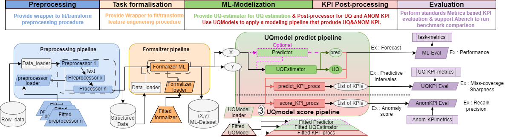
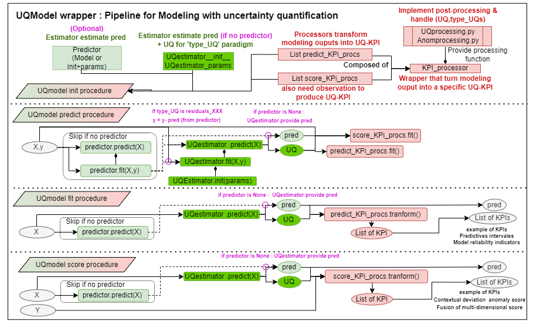

📚 Technical docs
Introduction
‘UQmodels for times series” is a library under development aiming to perform times series analysis through forecasting models with Uncertainty quantification (UQ). One of the library’s focuses is to identify the different uses of uncertainty quantification techniques within AI component.
AI component are more or less complex machine learning system acting as pipelines of models and processing that aim to both solve a operational task, and provide trusthworthy properties as for example : express model-confidence.
With this in mind, UQModels is exploring the creation of ML-systems that include the uncertainty management mecanisms to increase the trust you can place in them, by breaking down the problem into 4 parts :
Uncertainty measures estimations (Basic estimators): Build UQ-estimators that quantify impact of some-uncertainty sources on our ML-system.
Uncertainty measures evaluations (In progess) : Set up evaluation protocole to ensure the relevance of UQ-Estimators according to the uncertainty sources they are supposed to cover.
Uncertainty mitigation (Basic processors): Set up post-processor that valorize uncertainty measure according to a risk-aversion specification to correct models outputs, or augment it with additional KPI.
Mitigation analysis (In progess) : Evaluate benefits of uncertainty mitigation according to operational requirements.
First work focuses on :
Undifferentiated aleatoric sources that generate uncertainty on models decision, using predictive uncertainty UQ-estimators combined with confidence intervals construction (post-processors).
Undifferentiated epistemic sources that questions the relevance of the model, using epistemic score from meta-modeling strategy combined to Model-score-confidence construction (post-processors).
Brief summary of functionalities
In more practical terms, UQmodels is a library inspired by scikitlearn that aim to provide tools to form modeling pipeline to :
ML-Task modeling with UQ : make regression/forecast of a quantity of interest from features using ML or Deep learning and make UQmeasure estimation from an UQEstimators the impact of uncertainty sources :
Aleatoric : inducing an irreducible variability on the target/model output.
Epistemic : inducing an local model unreliability related to Out-of-distribution sample.
Post-processing : Valorize modeling outputs (prediction and UQ) to produce complementary KPIs that allow to perform uncertainty mitigation :
UQ-KPI : At the inference that provide insight about margin of errors of the prevision and model reliability indicator.
Aleatoric : Confidence intervales expressing output/target uncertainty.
Epistemic : Confidence indicators expressing local-weakness of the model.
ANOM-KPI : After real-time observation caracterise abnormal data using a residu based anomaly score (difference between observation and model prediction) considering UQ with both local-uncertainty (uncertainty predicted by an UQ-Estimators) and model-conficence (extracted from UQ-Estimators metamodelling mecanism).
Therefore, the main purpose of the library concern modeling step of data science, through the implementation of an UQModel wrapper that can manipulate in a abtract ways several implementations of forecasting models, UQestimators, and post-processor to form a data-processing chain. Such UQ-model can perform time series monitoring as forecasting augmented by uncertainty KPIs. For anomaly detection purposes, UQmodel can confront real observation to model prediction to form anomaly score based on contextual deviation score that assesses difference between an observation and an expected value, taking into account the uncertainties of the data and predictive models.
In addition to the modeling and post-processing parts, the library also implements minor functionality (in the form of wrappers) designed to facilitate the formalization of the pre-processing and evaluation step. The whole view of the library aim is provided :
Details of functionalities

Modelisation : UQEstimator
A UQ estimator is an estimator (fit/predict procedure scikit-learn) able to estimate an UQMeasure through uncertainty quantification (and optionally a prediction) after training phase on a standards ML-dataset (X,y) or more agnostic dataset (Inputs,Targets).
As there is differents form (variance, quantile, …) and nature (aleatoric, epistemic, …) of UQMeasures depeding to UQ-paradigm choosen (see theorical insight), there is a need for an agnostics wrapper able to support differents UQMeasure, and to communicate to downstream processings the information needed to handle them.
This is intended to produce UQModel pipeline that could be partly agnostics to UQestimator, by process UQmeasure via generic post-processors (see section post-processors), to produce UQ-KPIs that provide to end-users usefull insight about uncertainty arround prediction or local model unreliability.
Today UQmodel formalises different types of UQmeasure (called type_UQ) :
var/res_var : Variance estimation (univariate or multivariate with diagonal assumption) linked to variable to predict (or model residuals for ‘res_var’ case)
2var/res_2var: Asymmetric variance estimation (univariate or multivariate with asymmetry related to positive and negative errors) linked to variable to predict (or with the residuals for ‘res_2var’ case).
quantile / res_qantile: Estimation of quantiles (uni or multivariate) according to a list of quantile target (called list_alpha) linked to variable to predict (or model residuals for ‘res_qantile’ case).
varA&EM : (Advanced) Variance estimation with Epistemic and aleatoric disentanglement: Requires advanced UQEstimators performing meta-modelling (see theorical insight: example RF_UQ).
Implementation: severals naive or advanced implementations were carried out in order to test the framework.
Generic and ML-basline :
UQEstimator : Abstract class implementing structure and some common method (as _format that aim rescale input and output including UQmeasures)
MeanVarUQEstimator : Wrapper illustrating the implementation based on a coucple of estimator dedicated to the mean prediction, and the variance estimation learned from the squared error of the mean model.
QuantileUQEstimator : Wrapper illustrating the implementation of an approach based on quantile estimators provide during instanciation.
GBRQ_UQEstimator : Implementation of a QuantileUQEstimator based on scikit-learn’s Gradient Boosting regression model
GPR_UQEstimator : Implementation of a MeanVarUQEsimator based on scikit-learn’s Gaussiant process regressor model
REGML_UQEstimator(UQEstimator): Implementation of a MeanVarUQEsimator also incorporating a bias estimator (mean error) in the learning scheme, using scikit-learn Random forest type estimators by default.
Advanced ML-estimator :
RF_UQ : UQEstimator built as an overlay to Random Forest scikit-learn in order to also estimates the uncertainty measure in addition to the mean indicator: Is compatible with all UQ forms including the disentagled UQ (var A&E).
Base Neural Netowrk : (through NN-var a mutual model constructor)
MLP-PNN_MC-Dropout : MultiLayersPerceptron neural network in an ‘MC-Dropout’ meta modelling paradigm achieving forecasting with disentagled uncertainty quantification
MLP-PNN_EDL : MultiLayersPerceptron neural network in a ‘Deep evidential learning’ meta-modelling paradigm achieving forecasting with disentagled uncertainty quantification
MLP-PNN_Deep-ensemble : MultiLayersPerceptron neural network probabilistic regression (mean,var) in a meta modelling paradigm deep set realisation of uncertainty quantification disentagled
Avdanced Neural Netowrk : (Work in progress)
LSTM-ED MC-Drouput :(Beta) Deep neural network constructor with meta-modeling based on MC-dropout for multivariate time series forecasting with disentagled uncertainty quantization. The form of the deep network is composed of a pre-processing part (MLP or CNN), a dynamic modelling part (LSTM Encoder-Decoder blocks) and a predictor part (MLP or CNN).
CTransformer-ED MC-Drouput :(Beta) Deep neural network constructor with meta-modeling based on MC-dropout for multivariate time series forecasting with disentagled uncertainty quantization. The form of the deep network is composed of a pre-processing part (MLP or CNN), a dynamic modelling part (Transfomer Encoder-Decoder blocks) and a predictor part (MLP or CNN).
Post processing : Postprocessor(modeling output) -> UQ-KPI
Then to agnostic process UQmeasure into a usefull UQ-KPI (e.g. confidence interval), some basics tools (implemented in UQ-processing.py) aim to transform them into more homogeneous quantities, before applying more generic processings. The idea behind this division is to be able to easily support a new UQMeasure, by integrating it into UQprocessing to manipulate it.
- 1 UQMeasure_process_to_X that aim Interpreting a UQ-measure of any kind into a specific intermediate indicator (variance,residu,quantile,confidence_score). UQMeasure_process_to_X aim to be internally use by other processing function to make them to be agnostics to UQMeasure (or to raise errors if the UQmeasure cannot be tranform into the desired KPIs.)
- 2.a fit_KPI_processing that aim to estimate parameters need to transform modeling output into KPIs.
- 2.b compute_KPI_processing that aim to transform modeling output into KPIs using fitted_parameters if provided (or using internally fit_KPI_processing to obtain it).
- 3 UQ-KPI Processor that aim to wrapper a fit & a compute_KPI_processing in order to form a Transform object (fit,transform) that can be provided to an UQMOdel pipeline.
UQ_processing : process_UQmeasure_to_X(UQ,type_UQ,pred,y=None,type_UQ_params=None,kwargs):
process_UQmeasure_to_sigma : process UQmeasure into standards deviation (using gaussian assumption)
process_UQmeasure_to_quantile(alpha) : process UQmeasure into alpha level quantile
process_UQmeasure_to_residues : process UQmeasure & Predictions into residual-based score considering UQ.(kind of z_score).
process_UQmeasure_to_Escore : process disentagled UQMeasure into Epistemic score (only available for type_UQ=’var_A&E’)
process_UQmeasure_to_TOT_and_E_sigma -> Process disentagled UQMeasure (only available for type_UQ=’var_A&E’) into a pair (sigma_total,sigma_E) trying to manage residual interlacing (ex : removing floor-nominal espitemic values from sigma_E, Attribut high extremum aleatoric measure to sigma_E).
UQ_processing : fit/compute_KPIs(UQ, type_UQ, pred=None, y=None,type_UQ_params=None,kwargs):
fit/compute_PI(,list_alpha) : process modeling output into Predictive interval
fit/compute_ELVLscore : process modeling output into epistemic class level score. 1-beta data Anom_processing : fit/compute_KPIs(UQ, type_UQ, pred, y=None,type_UQ_params=None,kwargs):
fit/compute_anom_score(,beta) : process modeling output and observation to produce an anom-score
-auxiliar fit/compute processfit/compute_calibrate(residuals,beta) : process residuals into calibrated residuals according to beta-level such as theorically beta% of data have abs(anomscore) >1 (In progress -> turn into conformal procedure)
fit/compute_fusion_score(score,beta) : process score into fusioned score according to absolute_mean/mahalanobis aggregate.
In UQ-KPI_processors.py : Processor objects with fit/transform method to
UQKPI_Processor : Provide the UQMeasure
NormalPIs_processor : Turn UQMeasure into an Confidence-interval of the specified-level
Epistemicscorelvl_processor : Turn disentagled dUQMeasure into an Confidence-model-scores
Anomscore_processor :Turn UQMeasure, Prediction and Observation into an residu-based anomaly score considering UQ
Modeling Pipeline : UQModel
An UQModel is wrapper that combine Pre-processor, ML-task Estimator (optional), UQEstimators (may cover ML-task), and Postprocessor to form a pipeline of modeling that directly provide UQ-KPI in addition to model prediction. UQmodel provides a wrapper for prediction with UQ-KPI with a classic APIs (fit(X,y),Predict(X),Score(X,y)) that actually performs a succession of operations and manages communications between the various components. It also handle a save/load procedure that can store and load all of it’s subpart calling their own save/load procedure, or storing the rest (configuration and unsaved model/Processor) in a pickle.
The three main type of provided UQ-KPI are :
Confidence interval of model output (insight about uncertainty arround prediction/observation),
local model reliability indicator (for OOD purposes),
Anomaly score based on deviation between observation and model prediction normalized by uncertainty (kind of Z score).
After pre-processing the data and carrying out the features-engineering, the use of Uqmodels is composed of 4 steps :
Firstly, we have to instantiate a UQModels object that realizes the modeling and post-processing pipeline by :
Optionally provide a pre-processor that may perform feature-engineering.
Optionally provide a predictor (or choose an UQEstimator that also predicts in addition to UQ estimation).
choose aan UQEstimator and set its parameters (or use default ones)
If wanted, choose predict-KPI-processors and set their parameters (or use default ones)
If wanted, choose score-KPI-processors and set their parameters (or use default ones)
Then, called the fit method to fit successively the whole modeling pipeline.
Then called predict (resp score) method to recover model prediction and predict-KPIs (resp only the score-KPIs).
Finally, ensure the modeling relevance by performing an evaluation step using metrics that evaluate prediction, measures, and provided KPI.

The library is trying to implement reusable modular building blocks within new UQmodel pipelines. For advanced use, it is also possible to implement customs UQEstimators, KPI-processors, or UQmodels pipeline. The UQModels directory contains custom_UQKPI_processors and custom_UQModels files, which are respectively over-implementations. Their are dedicated to treat an Confiance.AI use case of Heterogenous sensors analysis as a multisource problem (linked to the consideration of multiple sensors). For create custom UQEstimators (waiting for a in progress-template), it is possible to mimic ML_estimator/Random_forest_UQ.py or DL_estimator/Neural_network_UQ.py implementing respectively an Random_forest_UQ UQEstimator based on scikit-learn, and a Neural_network_UQ wrapper based on tensorflow which is used to instantiates both MLP and advanced deep-models (LSTM-ED/Transformer-ED).
Processing/Preprocessing : Dataloader(query)-> data -> Processor(data,query)-> Processed data In order to facilitate the application and harmonisation of demonstrators, UQmodels provides some minor functionality in order to produce processing pipeline that wrap Dataloader & Processor, to cover the start of the datascience chain (data loading and well thought-out scrit applications). The hidden aim of these pipelines is also to encourage the pre-processing stage to be implemented in a modular way, so that certain aspects of processing can be easily modified and processing reuse facilitated, particularly in the context of time series analysis.
To this purpose some naive tools and class are provided:
Naive Load and Save API that write and load from files.
Cache_manager : Generic Object that aim to apply a provided save_API and load_API within a Processor or a Estimator.
Dataloader : Wrapper that apply a provided Load_API to load data.
Processor : Abstract class link a fit/transform procedure that aim to transform data into processed data in a agnostic form.
Structure : Abstrct class aim to store all information & meta data in order to manipulate structurate data.
Preprocessor : Processor in charge of perform data-processing considering Structure object that contains meta-data structural information.
Pipeline : Meta wrapper that instanciate and apply a pipeline chain (as fit/transform procedure) by combine a Data_loader and a sequential list of Processor. Note that since Processor can have their own Cache_manager, a Pipeline composed of serveral Processor can store intermediate process.
Evaluation/Visualisation (In progress): For the moment, Uqmodels only implements basic UQ-regression evaluation metrics (Sharpness, Coverage, Likelihood) related to predictive uncertainty. The metrics are i in such a way as to be compatible with a conditional evaluation in order to better hold data heterogeneity in evaluation.
In the long term, more evaluation methodologies could be added to assess :
Relevance of UQMeasures.
Predictive uncertainty : UQ-Calibration evaluation
Epistemic : Contextual out of distrubtion detection performance based on generation/alteration of data.
Benefits of uncertainty mitigation.
Model improvement (Performance & Robustness) link to data-cleaning strategy (Noise reduction, outliers detection, labels-correction).
Gain of decision including risk-aversion using an buisness cost metrics of models errors.
Gain related to calibration/conformalisation of models to handle gap/shift between train and real data.